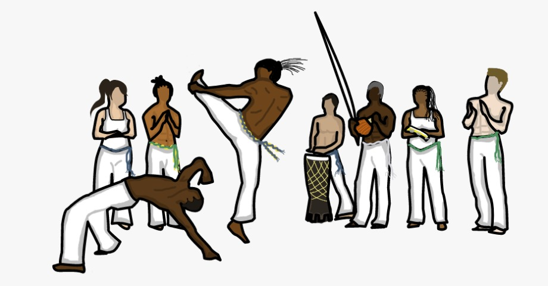

Batizados & Graduações
Batizado
O batizado na capoeira é um dia de festa, onde o aluno ou alunos iniciantes ganha seu apelido “nome que será como ele vai ser conhecido no grupo”, e é apresentado de forma oficial para todos.
No início da cerimônia um aluno que representara os demais fica responsável por saudar a todos os presentes (capoeiristas e convidados), e faz um discurso falando sobre a filosofia do grupo a qual pertence, sobre os conhecimentos adquiridos e sobre o mestre.
Nesse primeiro jogo, o aluno inicia correndo na roda cumprimentando a todos da roda, reverenciando o berimbau e seu mestre, daí então começam a tocar e cantar; no primeiro jogo ele será acompanhado do seu padrinho (mestre, contramestre, professor ou aluno mais graduado) que será responsável por acompanhar e ensiná-lo fundamentos história “o padrinho de capoeira será lembrado e citado durante toda sua vida na capoeira”.
Em seguida, ele joga com os demais participantes da roda e recebe seu primeiro cordão/cordel e está oficialmente batizado.
Graduação
Para receber a graduação o aluno é observado pelo mestre desde seu batismo no grupo, e passa por um exame no dia da graduação. No dia do exame o aluno é avaliado em diversos quesitos como: ginga, esquiva, golpes básicos e seu desenvolvimento com instrumentos e música.
No exame, ela joga com um aluno de mesma graduação e com outros de graduação mais elevada então o mestre avalia se o gradua ou não; para a troca de graduação/cordão dos cinco primeiros níveis o aluno precisa praticar no mínimo 1 ano, para ser aluno instrutor 2 anos, aluno formado 2 a 3 anos, Monitor 4 a 5 anos, a graduação de Professor é dada pelo seu trabalho realizado na capoeira e a graduação de Mestre é dada pelos mestres mais antigos.
Cordão/Cordel
No início não se utilizava os cordoes como nos dias hoje e sim um lenço no pescoço, o cordão como conhecemos hoje foi introduzido na capoeira por mestre bimba. para auxiliar no sistema de graduação, com influência das artes marciais ele diferencia o nível de cada praticante é feito com 9 fios de seda trançados de três em três, eles são passados pelas passadeiras das calças e é dado o laço do lado direito.
Sistema de Graduação com base na bandeira do Brasil:
| Cor do cordão | Graduação |
|---|---|
| Sem cordão | Aluno iniciante |
| Cordão verde | Aluno batizado |
| Cordão amarelo | Aluno graduado |
| Cordão azul | Aluno graduado |
| Cordão verde e amarelo | Aluno intermediário |
| Cordão verde e azul | Aluno adiantado |
| Cordão amarelo e azul | Aluno estagiário |
| Cordão verde, amarelo e azul | Aluno formado |
| Cordão verde e branco | Monitor |
| Cordão amarelo e branco | Professor |
| Cordão azul e branco | Contramestre |
| Cordão branco | Mestre |